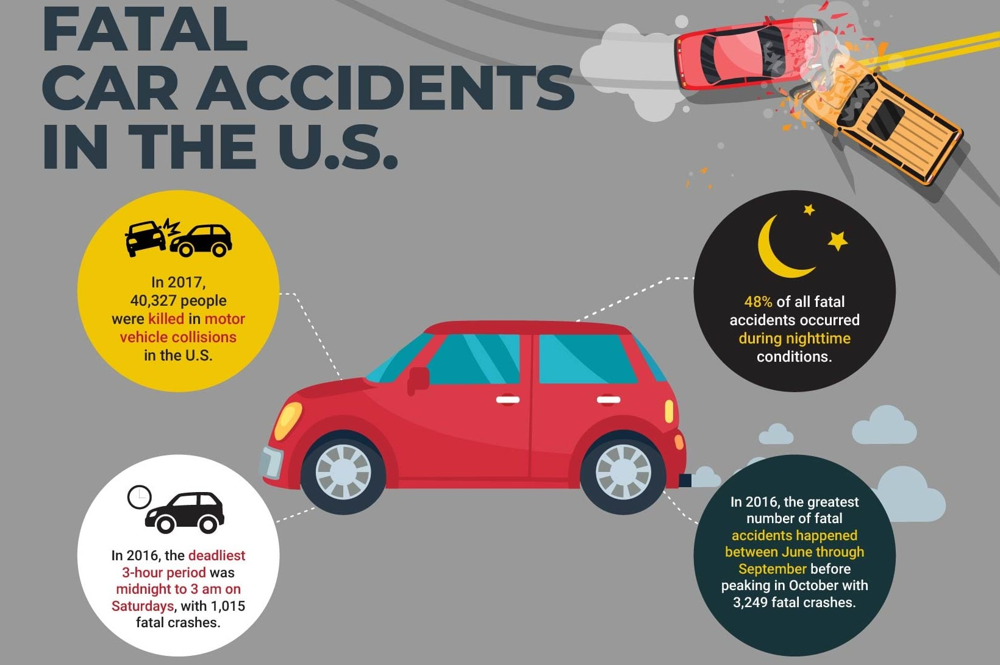

Transforming Data into Insightful Decisions
Hello! I'm Hari Krishan, a Data Analyst with Over 3+ years of experience and a diverse background in Healthcare, Finance, and Educational domains.
I bring a wealth of experience and a robust skill set to every index I undertake. My proficiency in data analysis is supported by a strong command of various programming languages, tools, and cloud platforms.
Over the past three years, I have honed my skills as a data analyst, delivering valuable insights and solutions across multiple domains. In my portfolio, you'll find a range of indexs that showcase my analytical skills and my ability to derive actionable insights from complex datasets. Whether it's predicting trends, optimizing processes, or uncovering hidden patterns, my goal is to transform data into meaningful solutions.
Feel free to explore my work and see how I leverage my skills to make data-driven decisions that drive success. Thank you for visiting!

The machine learning techniques to predict the CO2 emissions values for the next 15 years (2024- 2038).
Carbon Dioxide (co2) emission patterns by Tableau, And Implementing machine learning models such as Random Forest Regression, and Long Short Term Memory (LSTM) to predict the future CO2 values for the next 15 years up to 2038.

AI, machine learning, and data science allows us to analyze the spread of COVID-19 to better understand the virus. It also allows us to help inform the world of new discoveries around COVID-19. Predictions for confirmed cases, recovered, deaths, and were made based on the dataset. Finding related HYPOTHESIS

US Accidents Analysis using PowerBI, Published the work through Microsoft Power BI.

The main goal of our index is to create a user-friendly interface where people can detect any transactions which were not made by them, and which makes them capable of finding out if any deceptive transactions are going on with their credit cards.

Built a code using Python and some IOT sencers

This application allows to reserve/cancel tickets, enquire for bus, seat selection and time saving as it is accessed via internet. This index provides and checks all sorts of constraints so that user does give only useful data and thus validation is done in an effective way.